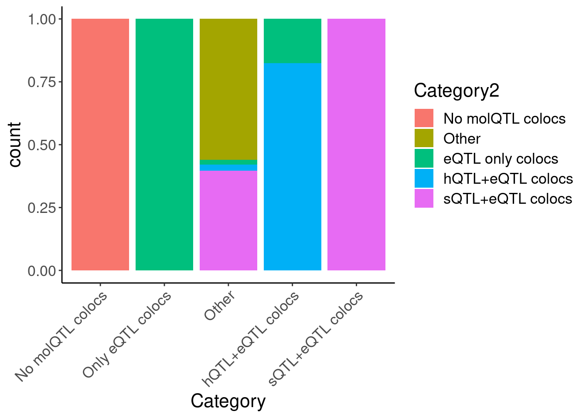
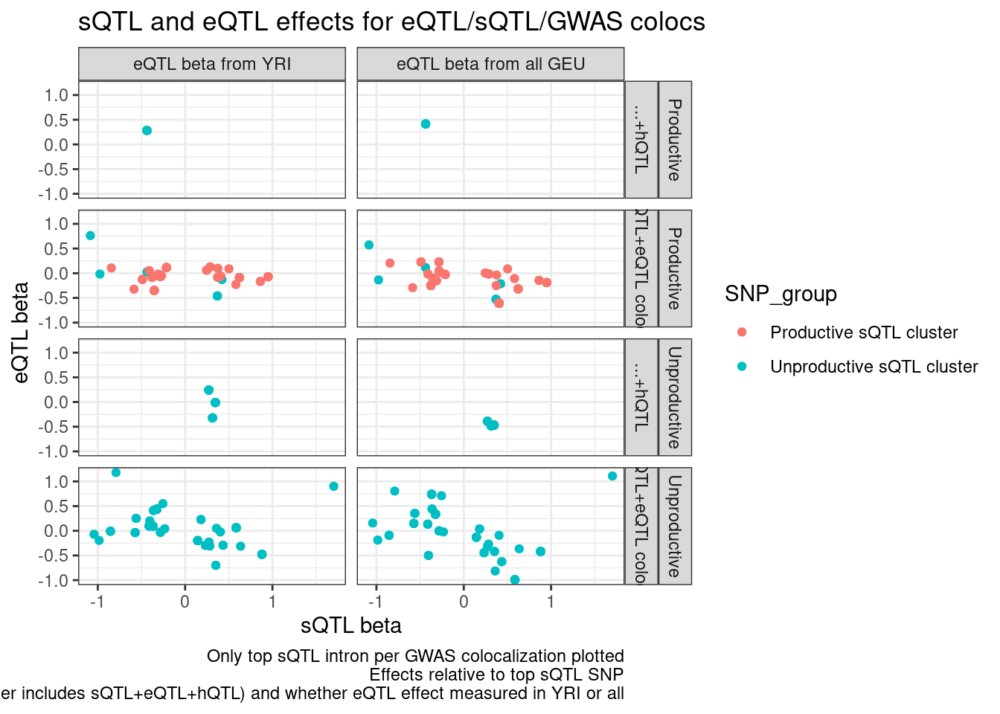

20230502_GetColocsForCarlos
2023-05-02
Last updated: 2023-05-02
Checks: 6 1
Knit directory:
ChromatinSplicingQTLs/analysis/
This reproducible R Markdown analysis was created with workflowr (version 1.7.0). The Checks tab describes the reproducibility checks that were applied when the results were created. The Past versions tab lists the development history.
The R Markdown is untracked by Git. To know which version of the R
Markdown file created these results, you’ll want to first commit it to
the Git repo. If you’re still working on the analysis, you can ignore
this warning. When you’re finished, you can run
wflow_publish to commit the R Markdown file and build the
HTML.
Great job! The global environment was empty. Objects defined in the global environment can affect the analysis in your R Markdown file in unknown ways. For reproduciblity it’s best to always run the code in an empty environment.
The command set.seed(20191126) was run prior to running
the code in the R Markdown file. Setting a seed ensures that any results
that rely on randomness, e.g. subsampling or permutations, are
reproducible.
Great job! Recording the operating system, R version, and package versions is critical for reproducibility.
Nice! There were no cached chunks for this analysis, so you can be confident that you successfully produced the results during this run.
Great job! Using relative paths to the files within your workflowr project makes it easier to run your code on other machines.
Great! You are using Git for version control. Tracking code development and connecting the code version to the results is critical for reproducibility.
The results in this page were generated with repository version 6c60c18. See the Past versions tab to see a history of the changes made to the R Markdown and HTML files.
Note that you need to be careful to ensure that all relevant files for
the analysis have been committed to Git prior to generating the results
(you can use wflow_publish or
wflow_git_commit). workflowr only checks the R Markdown
file, but you know if there are other scripts or data files that it
depends on. Below is the status of the Git repository when the results
were generated:
Ignored files:
Ignored: .DS_Store
Ignored: .Rhistory
Ignored: .Rproj.user/
Ignored: analysis/.Rhistory
Ignored: code/.DS_Store
Ignored: code/.RData
Ignored: code/._report.html
Ignored: code/.ipynb_checkpoints/
Ignored: code/.snakemake/
Ignored: code/APA_Processing/
Ignored: code/Alignments/
Ignored: code/ChromHMM/
Ignored: code/ENCODE/
Ignored: code/ExpressionAnalysis/
Ignored: code/ExtractPhenotypeBedByGenotype.py
Ignored: code/FastqFastp/
Ignored: code/FastqFastpSE/
Ignored: code/FastqSE/
Ignored: code/FineMapping/
Ignored: code/Genotypes/
Ignored: code/H3K36me3_CutAndTag.pdf
Ignored: code/IntronSlopes/
Ignored: code/LR.bed
Ignored: code/LR.seq.bed
Ignored: code/LongReads/
Ignored: code/Metaplots/
Ignored: code/Misc/
Ignored: code/MiscCountTables/
Ignored: code/Multiqc/
Ignored: code/Multiqc_chRNA/
Ignored: code/NonCodingRNA/
Ignored: code/NonCodingRNA_annotation/
Ignored: code/PairwisePi1Traits.P.all.txt.gz
Ignored: code/PeakCalling/
Ignored: code/Phenotypes/
Ignored: code/PlotGruberQTLs/
Ignored: code/PlotQTLs/
Ignored: code/ProCapAnalysis/
Ignored: code/QC/
Ignored: code/QTL_SNP_Enrichment/
Ignored: code/QTLs/
Ignored: code/RPKM_tables/
Ignored: code/ReadLengthMapExperiment/
Ignored: code/ReadLengthMapExperimentResults/
Ignored: code/ReadLengthMapExperimentSpliceCounts/
Ignored: code/ReferenceGenome/
Ignored: code/Rplots.pdf
Ignored: code/Session.vim
Ignored: code/SmallMolecule/
Ignored: code/SplicingAnalysis/
Ignored: code/TODO
Ignored: code/Tehranchi/
Ignored: code/alias/
Ignored: code/bigwigs/
Ignored: code/bigwigs_FromNonWASPFilteredReads/
Ignored: code/config/.DS_Store
Ignored: code/config/._.DS_Store
Ignored: code/config/.ipynb_checkpoints/
Ignored: code/config/config.local.yaml
Ignored: code/dag.pdf
Ignored: code/dag.png
Ignored: code/dag.svg
Ignored: code/data/
Ignored: code/debug.ipynb
Ignored: code/debug_python.ipynb
Ignored: code/deepTools/
Ignored: code/featureCounts/
Ignored: code/featureCountsBasicGtf/
Ignored: code/genome_config.yaml
Ignored: code/gwas_summary_stats/
Ignored: code/hyprcoloc/
Ignored: code/igv_session.xml
Ignored: code/isoseqbams/
Ignored: code/log
Ignored: code/logs/
Ignored: code/notebooks/.ipynb_checkpoints/
Ignored: code/pi1/
Ignored: code/rules/.ProcessSmallMoleculeData.smk.swp
Ignored: code/rules/.ipynb_checkpoints/
Ignored: code/rules/OldRules/
Ignored: code/rules/notebooks/
Ignored: code/salmontest/
Ignored: code/scratch/
Ignored: code/scripts/.ipynb_checkpoints/
Ignored: code/scripts/GTFtools_0.8.0/
Ignored: code/scripts/__pycache__/
Ignored: code/scripts/liftOverBedpe/liftOverBedpe.py
Ignored: code/snakemake.dryrun.log
Ignored: code/snakemake.log
Ignored: code/snakemake.sbatch.log
Ignored: code/snakemake_profiles/slurm/__pycache__/
Ignored: code/test.introns.bed
Ignored: code/test.introns2.bed
Ignored: code/test.log
Ignored: code/tracks.xml
Ignored: data/.DS_Store
Ignored: data/GWAS_catalog_summary_stats_sources/._list_gwas_summary_statistics_6_Apr_2022-10.csv
Ignored: data/GWAS_catalog_summary_stats_sources/._list_gwas_summary_statistics_6_Apr_2022-11.csv
Ignored: data/GWAS_catalog_summary_stats_sources/._list_gwas_summary_statistics_6_Apr_2022-2.csv
Ignored: data/GWAS_catalog_summary_stats_sources/._list_gwas_summary_statistics_6_Apr_2022-3.csv
Ignored: data/GWAS_catalog_summary_stats_sources/._list_gwas_summary_statistics_6_Apr_2022-4.csv
Ignored: data/GWAS_catalog_summary_stats_sources/._list_gwas_summary_statistics_6_Apr_2022-5.csv
Ignored: data/GWAS_catalog_summary_stats_sources/._list_gwas_summary_statistics_6_Apr_2022-6.csv
Ignored: data/GWAS_catalog_summary_stats_sources/._list_gwas_summary_statistics_6_Apr_2022-7.csv
Ignored: data/GWAS_catalog_summary_stats_sources/._list_gwas_summary_statistics_6_Apr_2022-8.csv
Ignored: data/GWAS_catalog_summary_stats_sources/._list_gwas_summary_statistics_6_Apr_2022.csv
Ignored: data/Metaplots/.DS_Store
Untracked files:
Untracked: analysis/20230502_GetColocsForCarlos.Rmd
Untracked: code/envs/salmon.yml
Untracked: code/scripts/SmallMolecule_chRNA_DE.R
Untracked: code/scripts/SmallMolecule_fitDoseResponseSplicing_AsCassetteExons.R
Untracked: output/GwasColocs_by_MolQTLCategory_ForCarlos.All.tsv.gz
Untracked: output/GwasColocs_by_MolQTLCategory_ForCarlos.YRI_Only.tsv.gz
Unstaged changes:
Modified: analysis/20230324_MakeFigs.Rmd
Modified: analysis/20230420_FindeQTLsQTLGWAS_Colocs.Rmd
Modified: code/Snakefile
Modified: code/rules/ProcessSmallMoleculeData.smk
Modified: code/scripts/GenometracksByGenotype
Note that any generated files, e.g. HTML, png, CSS, etc., are not included in this status report because it is ok for generated content to have uncommitted changes.
There are no past versions. Publish this analysis with
wflow_publish() to start tracking its development.
knitr::opts_chunk$set(echo = TRUE, warning = F, message = F)
library(tidyverse)── Attaching packages ─────────────────────────────────────── tidyverse 1.3.1 ──✔ ggplot2 3.3.6 ✔ purrr 0.3.4
✔ tibble 3.1.7 ✔ dplyr 1.0.9
✔ tidyr 1.2.0 ✔ stringr 1.4.0
✔ readr 2.1.2 ✔ forcats 0.5.1── Conflicts ────────────────────────────────────────── tidyverse_conflicts() ──
✖ dplyr::filter() masks stats::filter()
✖ dplyr::lag() masks stats::lag()library(RColorBrewer)
library(data.table)
Attaching package: 'data.table'The following objects are masked from 'package:dplyr':
between, first, lastThe following object is masked from 'package:purrr':
transposelibrary(edgeR)Loading required package: limma# Set theme
theme_set(
theme_classic() +
theme(text=element_text(size=16, family="Helvetica")))
# I use layer a lot, to rotate long x-axis labels
Rotate_x_labels <- theme(axis.text.x = element_text(angle = 45, vjust = 1, hjust=1))
#test plot
ggplot(mtcars, aes(x=mpg, y=cyl)) +
geom_point()
Intro
To bolster the idea that some meaningful fraction of sQTL/GWAS colocalizations are really driven by eQTL effects, we had the idea of looking at the concordance in eQTL–>GWAS effects for secondary eQTL/GWAS signals. For example, if a sQTL colocalizes with GWAS because it is the primary eQTL and it downregulates MyFavoriteGene, then the sign of the complex trait effect should be the same for secondary eQTLs of the same sign.
So here is our proposed approach to investigate this…
I would first check the independent susie signals alongside the marginal association Manhattan plots just to make sure they sort of make sense… I haven’t done this. Anyway, then I can give you a list of ~13 sQTL/eQTL/GWAS colocalizations (without a hQTL colocalization). Keep in mind colocalization was done with the marginal eQTL signal, which may be made up of multiple independent eQTLs, and colocalization assumes only one QTL so basically we are colocalizing primary signals. There aren’t many of eQTL/sQTL/GWAS colocalizations (only 13 or so genes), but I have pretty high confidence in these being sQTL-driven effects for the primary eQTL. And direction of effects are again by in large consistent with sQTL increase in unproductive junction results in downregulation of gene. I can supplement that with a list of hQTL/eQTL/GWAS colocalizations, which will probably yield another 15 or so genes, for which the primary effect is through chromatin. Then we can intersect that list of 30 or so genes with the susie genes with secondary/tertiary signals. We can then check all the secondary signals to see if they map to a significant hQTL/sQTL… I would probably also verify the signals are in low-LD (can just use geuvadis genotypes to calculate LD), then I would check the concordance between the eQTL effect direction at both the primary and secondary signals and gwas.
Carlos has offered to do this analysis, but to get him started I am going to give him a list of all GWAS colocalizations clusters that contain an hQTL/eQTL, or a sQTL/eQTL.
I’m going to do this twice actually, once using the colocalization results where the polyA data used all geauvadis, and again where it’s just YRI.
gwas.traits <- read_tsv("../code/config/gwas_table.tsv") %>%
dplyr::rename(GWAS.accession=gwas, gwas.trait=trait)
hyprcoloc.results <- read_tsv("../code/hyprcoloc/Results/ForGWASColoc/GWASColoc_ChromatinAPAAndRNA/results.txt.gz") %>%
# hyprcoloc.results <- read_tsv("../code/hyprcoloc/Results/ForGWASColoc/GWASColoc_ChromatinAPAAndRNAYRI/results.txt.gz") %>%
dplyr::rename(GWAS.Loci = GWASLeadSnpChrom_Pos_RefAllele_AltAllele_rsID_trait) %>%
separate(GWAS.Loci, into=c("GWAS.LeadSNP.Chrom", "GWAS.LeadSNP.Pos", "GWAS.accession"), sep="_", remove=F) %>%
separate_rows(ColocalizedTraits, sep = ",") %>%
mutate(IsColocalizedWithSomething = !ColocalizedTraits == "None") %>%
mutate(Trait = if_else(IsColocalizedWithSomething, ColocalizedTraits, DroppedTrait)) %>%
dplyr::select(-DroppedTrait, -ColocalizedTraits) %>%
mutate(Trait = str_replace_all(Trait, " ", "")) %>%
mutate(GWAS.Loci = str_replace_all(GWAS.Loci, " ", "")) %>%
mutate(Trait = if_else(Trait == GWAS.Loci, paste("GWAS",GWAS.Loci,sep = ";"),Trait)) %>%
separate(Trait, into=c("PhenotypeClass", "Phenotype"), sep=";", remove=F) %>%
group_by(GWAS.Loci, HyprcolocIteration) %>%
mutate(ColocalizedClusterContainsGWASTrait = any(PhenotypeClass=="GWAS") & IsColocalizedWithSomething) %>%
ungroup() %>%
inner_join(gwas.traits %>%
dplyr::select(1:2))
PhenotypeRecodes = c("H3K36ME3"="hQTL", "H3K27AC"="hQTL", "H3K4ME3"="hQTL", "H3K4ME1"="hQTL",
"Expression.Splicing"="eQTL", "Expression.Splicing.Subset_YRI"="eQTL", "polyA.Splicing.Subset_YRI"="sQTL", "chRNA.Expression.Splicing"="chRNA eQTL",
"APA_Nuclear"="APA QTL", "APA_Total"="APA QTL", "polyA.Splicing"="sQTL", "GWAS"="GWAS")
PhenotypeRecodes.df <- data.frame(PhenotypeRecodes) %>%
rownames_to_column("PhenotypeClass")
hyprcoloc.results.toplot <- hyprcoloc.results %>%
filter(!GWAS.accession=="IMSGC2019") %>%
left_join(PhenotypeRecodes.df) %>%
mutate(PhenotypeRecodes = if_else(is.na(PhenotypeRecodes), PhenotypeClass, PhenotypeRecodes)) %>%
filter(!PhenotypeRecodes == "APA QTL") %>%
group_by(GWAS.Loci, HyprcolocIteration) %>%
filter(any(ColocalizedClusterContainsGWASTrait) | PhenotypeClass=="GWAS") %>%
mutate(Category = case_when(
all(ColocalizedClusterContainsGWASTrait==FALSE) | all(is.na(HyprcolocIteration)) ~ "No molQTL colocs",
all(PhenotypeRecodes %in% c("GWAS", "hQTL")) ~ "Only hQTL colocs",
all(PhenotypeRecodes %in% c("GWAS", "eQTL")) ~ "Only eQTL colocs",
all(PhenotypeRecodes %in% c("GWAS", "eQTL", "hQTL", "chRNA eQTL")) ~ "hQTL+eQTL colocs",
all(PhenotypeRecodes %in% c("GWAS", "sQTL")) ~ "sQTL colocs",
all(PhenotypeRecodes %in% c("GWAS", "sQTL", "eQTL", "eQTL")) ~ "sQTL+eQTL colocs",
# all(PhenotypeRecodes %in% c("GWAS", "sQTL", "chRNA eQTL", "eQTL", "hQTL")) ~ "sQTL+eQTL+hQTL colocs",
TRUE ~ "Other"
)) %>%
mutate(Category2 = case_when(
all(ColocalizedClusterContainsGWASTrait==FALSE) | all(is.na(HyprcolocIteration)) ~ "No molQTL colocs",
any(PhenotypeRecodes == "hQTL") & any(PhenotypeRecodes=="eQTL") & any(PhenotypeRecodes=="sQTL") ~ "Other",
!any(PhenotypeRecodes == "hQTL") & any(PhenotypeRecodes=="eQTL") & any(PhenotypeRecodes=="sQTL") ~ "sQTL+eQTL colocs",
any(PhenotypeRecodes == "hQTL") & any(PhenotypeRecodes=="eQTL") & !any(PhenotypeRecodes=="sQTL") ~ "hQTL+eQTL colocs",
!any(PhenotypeRecodes == "hQTL") & any(PhenotypeRecodes=="eQTL") & !any(PhenotypeRecodes=="sQTL") ~ "eQTL only colocs",
TRUE ~ "Filter out"
)) %>%
ungroup()
hyprcoloc.results.toplot %>%
filter(!Category2=="Filter out") %>%
ggplot(aes(x=Category, fill=Category2)) +
geom_bar(position="fill") +
Rotate_x_labels
hyprcoloc.results.toplot %>%
distinct(GWAS.Loci, .keep_all=T) %>%
count(Category2)# A tibble: 6 × 2
Category2 n
<chr> <int>
1 Filter out 950
2 No molQTL colocs 4878
3 Other 59
4 eQTL only colocs 511
5 hQTL+eQTL colocs 76
6 sQTL+eQTL colocs 281hyprcoloc.results.toplot %>%
distinct(GWAS.Loci, .keep_all=T) %>%
count(Category)# A tibble: 7 × 2
Category n
<chr> <int>
1 No molQTL colocs 4878
2 Only eQTL colocs 482
3 Only hQTL colocs 369
4 Other 363
5 hQTL+eQTL colocs 128
6 sQTL colocs 320
7 sQTL+eQTL colocs 215hyprcoloc.results.toplot %>%
filter(Category2 == "sQTL+eQTL colocs") %>%
filter(PhenotypeClass == "Expression.Splicing") %>%
distinct(Trait)# A tibble: 108 × 1
Trait
<chr>
1 Expression.Splicing;ENSG00000179163.11
2 Expression.Splicing;ENSG00000142089.16
3 Expression.Splicing;ENSG00000149922.10
4 Expression.Splicing;ENSG00000159314.11
5 Expression.Splicing;ENSG00000176681.14
6 Expression.Splicing;ENSG00000238083.7
7 Expression.Splicing;ENSG00000167468.17
8 Expression.Splicing;ENSG00000125755.19
9 Expression.Splicing;ENSG00000128604.20
10 Expression.Splicing;ENSG00000132763.15
# … with 98 more rowshyprcoloc.results.toplot %>%
filter(Category == "sQTL+eQTL colocs") %>%
filter(PhenotypeClass == "Expression.Splicing") %>%
distinct(Trait)# A tibble: 76 × 1
Trait
<chr>
1 Expression.Splicing;ENSG00000179163.11
2 Expression.Splicing;ENSG00000142089.16
3 Expression.Splicing;ENSG00000149922.10
4 Expression.Splicing;ENSG00000159314.11
5 Expression.Splicing;ENSG00000176681.14
6 Expression.Splicing;ENSG00000238083.7
7 Expression.Splicing;ENSG00000167468.17
8 Expression.Splicing;ENSG00000125755.19
9 Expression.Splicing;ENSG00000132763.15
10 Expression.Splicing;ENSG00000123427.17
# … with 66 more rowshyprcoloc.results.toplot$PhenotypeClass %>% unique()[1] "GWAS" "Expression.Splicing"
[3] "polyA.Splicing" "chRNA.Expression.Splicing"
[5] "H3K4ME1" "H3K27AC"
[7] "H3K4ME3" "chRNA.Splicing"
[9] "H3K36ME3" hyprcoloc.results.toplot$PhenotypeRecodes %>% unique()[1] "GWAS" "eQTL" "sQTL" "chRNA eQTL"
[5] "hQTL" "chRNA.Splicing"Ok part of the discrepancy is that previously, if there was a gwas coloc with chRNA sQTL and polyA sQTL that was getting bunched into the “Other” category… That doesn’t make good sense… Let’s keep with the Category2… And also check the previous beta beta scatter
PC2.filter <- c("Expression.Splicing", "Expression.Splicing.Subset_YRI")
PC2.SignificanceFilter <- c("H3K27AC", "H3K4ME3", "H3K36ME3")
PC1.filter <- c("polyA.Splicing", "H3K27AC", "H3K4ME1", "H3K4ME3")
PC1.filter.Splicing <- PC1.filter[str_detect(PC1.filter, "Splicing")]
PC1.filter.NonSplicing <- PC1.filter[!str_detect(PC1.filter, "Splicing")]
dat.foreQTLQQ <- fread("../code/pi1/PairwisePi1Traits.P.all.txt.gz") %>%
filter((PC1 %in% PC1.filter))
IntronAnnotatins <- read_tsv("../data/IntronAnnotationsFromYang.tsv.gz") %>%
mutate(chrom = str_remove_all(chrom, "chr")) %>%
mutate(Intron = paste(chrom, start, end, sep=":")) %>%
filter(!str_detect(SuperAnnotation, "NoncodingGene"))
dat.foreQTLQQ.sQTLs <- dat.foreQTLQQ %>%
filter(PC1 %in% PC1.filter.Splicing) %>%
group_by(PC1, P1) %>%
filter(!any((PC2 %in% PC2.SignificanceFilter) & (trait.x.p.in.y < 0.01))) %>%
ungroup() %>%
filter(PC2 %in% PC2.filter) %>%
separate(P1, into=c("Intron", "Cluster"), sep=":clu", remove=F) %>%
inner_join(
IntronAnnotatins %>%
dplyr::select(Intron, SuperAnnotation),
by="Intron") %>%
group_by(PC1, PC2, Cluster) %>%
mutate(SNP_group = case_when(
all(str_detect(SuperAnnotation, "Productive")) ~ "Productive sQTL cluster",
any(str_detect(SuperAnnotation, "Unproductive")) ~ "Unproductive sQTL cluster",
TRUE ~ "sQTL Other"
))
CategoriesWith_sQTLs <- c("sQTL+eQTL colocs", "Other", "sQTL")
inner_join(
hyprcoloc.results.toplot %>%
filter(Category2 %in% CategoriesWith_sQTLs) %>%
filter(PhenotypeClass %in% c("polyA.Splicing")) %>%
dplyr::select(GWAS.Loci, sQTL=Trait),
hyprcoloc.results.toplot %>%
filter(Category2 %in% CategoriesWith_sQTLs) %>%
filter(PhenotypeClass %in% c("Expression.Splicing")) %>%
dplyr::select(GWAS.Loci, eQTL=Trait, everything())
) %>%
inner_join(
dat.foreQTLQQ.sQTLs %>%
mutate(sQTL=paste(PC1, P1, sep=";"))
) %>%
mutate(IntronGroup = if_else(str_detect(SuperAnnotation, "Unproductive"), "Unproductive", "Productive")) %>%
group_by(GWAS.Loci, PC2) %>%
filter(p_permutation.x == min(p_permutation.x)) %>%
ungroup() %>%
mutate(Category2 = recode(Category2, "Other"="...+hQTL")) %>%
mutate(PC2 = recode(PC2, "Expression.Splicing"="eQTL beta from all GEU","Expression.Splicing.Subset_YRI"="eQTL beta from YRI" )) %>%
ggplot(aes(x=beta.x, y=x.beta.in.y, color=SNP_group)) +
geom_point() +
facet_grid(IntronGroup ~ Category2 ~ PC2) +
theme_bw() +
# geom_smooth(method='lm') +
labs(x="sQTL beta", y="eQTL beta", title="sQTL and eQTL effects for eQTL/sQTL/GWAS colocs", caption="Only top sQTL intron per GWAS colocalization plotted\nEffects relative to top sQTL SNP\nFacets are intron level category category, gwas coloc category (Other includes sQTL+eQTL+hQTL) and whether eQTL effect measured in YRI or all")
Ok that still makes sense… Now let’s write out some results for Carlos…
ColocCategories <- c("eQTL only colocs", "hQTL+eQTL colocs", "sQTL+eQTL colocs", "Other")
hyprcoloc.results.toplot %>%
filter(Category2 %in% ColocCategories) %>%
mutate(Category2=recode(Category2, Other="hQTL+sQTL+eQTL colocs")) %>%
dplyr::select(ColocCategory=Category2, Trait, PhenotypeClass, GWAS.Loci, GWAS.LeadSNP.Chrom, GWAS.LeadSNP.Pos, GWAS.accession, gwas.trait, TopCandidateSNP, PosteriorColocalizationPr) %>%
distinct(GWAS.Loci, .keep_all=T) %>%
count(ColocCategory)# A tibble: 4 × 2
ColocCategory n
<chr> <int>
1 eQTL only colocs 511
2 hQTL+eQTL colocs 76
3 hQTL+sQTL+eQTL colocs 59
4 sQTL+eQTL colocs 281hyprcoloc.results.toplot %>%
filter(Category2 %in% ColocCategories) %>%
mutate(Category2=recode(Category2, Other="hQTL+sQTL+eQTL colocs")) %>%
dplyr::select(ColocCategory=Category2, Trait, PhenotypeClass, GWAS.Loci, GWAS.LeadSNP.Chrom, GWAS.LeadSNP.Pos, GWAS.accession, gwas.trait, TopCandidateSNP, PosteriorColocalizationPr) %>%
write_tsv("../output/GwasColocs_by_MolQTLCategory_ForCarlos.YRI_Only.tsv.gz")
sessionInfo()R version 4.2.0 (2022-04-22)
Platform: x86_64-pc-linux-gnu (64-bit)
Running under: CentOS Linux 7 (Core)
Matrix products: default
BLAS/LAPACK: /software/openblas-0.3.13-el7-x86_64/lib/libopenblas_haswellp-r0.3.13.so
locale:
[1] LC_CTYPE=en_US.UTF-8 LC_NUMERIC=C LC_TIME=C
[4] LC_COLLATE=C LC_MONETARY=C LC_MESSAGES=C
[7] LC_PAPER=C LC_NAME=C LC_ADDRESS=C
[10] LC_TELEPHONE=C LC_MEASUREMENT=C LC_IDENTIFICATION=C
attached base packages:
[1] stats graphics grDevices utils datasets methods base
other attached packages:
[1] edgeR_3.38.4 limma_3.52.4 data.table_1.14.2 RColorBrewer_1.1-3
[5] forcats_0.5.1 stringr_1.4.0 dplyr_1.0.9 purrr_0.3.4
[9] readr_2.1.2 tidyr_1.2.0 tibble_3.1.7 ggplot2_3.3.6
[13] tidyverse_1.3.1
loaded via a namespace (and not attached):
[1] httr_1.4.3 sass_0.4.1 bit64_4.0.5 vroom_1.5.7
[5] jsonlite_1.8.0 R.utils_2.11.0 modelr_0.1.8 bslib_0.3.1
[9] assertthat_0.2.1 highr_0.9 cellranger_1.1.0 yaml_2.3.5
[13] pillar_1.7.0 backports_1.4.1 lattice_0.20-45 glue_1.6.2
[17] digest_0.6.29 promises_1.2.0.1 rvest_1.0.2 colorspace_2.0-3
[21] R.oo_1.24.0 htmltools_0.5.2 httpuv_1.6.5 pkgconfig_2.0.3
[25] broom_0.8.0 haven_2.5.0 scales_1.2.0 later_1.3.0
[29] tzdb_0.3.0 git2r_0.30.1 generics_0.1.2 farver_2.1.0
[33] ellipsis_0.3.2 withr_2.5.0 cli_3.3.0 magrittr_2.0.3
[37] crayon_1.5.1 readxl_1.4.0 evaluate_0.15 R.methodsS3_1.8.1
[41] fs_1.5.2 fansi_1.0.3 xml2_1.3.3 tools_4.2.0
[45] hms_1.1.1 lifecycle_1.0.1 munsell_0.5.0 reprex_2.0.1
[49] locfit_1.5-9.7 compiler_4.2.0 jquerylib_0.1.4 rlang_1.0.2
[53] grid_4.2.0 rstudioapi_0.13 labeling_0.4.2 rmarkdown_2.14
[57] gtable_0.3.0 DBI_1.1.2 R6_2.5.1 lubridate_1.8.0
[61] knitr_1.39 fastmap_1.1.0 bit_4.0.4 utf8_1.2.2
[65] workflowr_1.7.0 rprojroot_2.0.3 stringi_1.7.6 parallel_4.2.0
[69] Rcpp_1.0.8.3 vctrs_0.4.1 dbplyr_2.1.1 tidyselect_1.1.2
[73] xfun_0.30